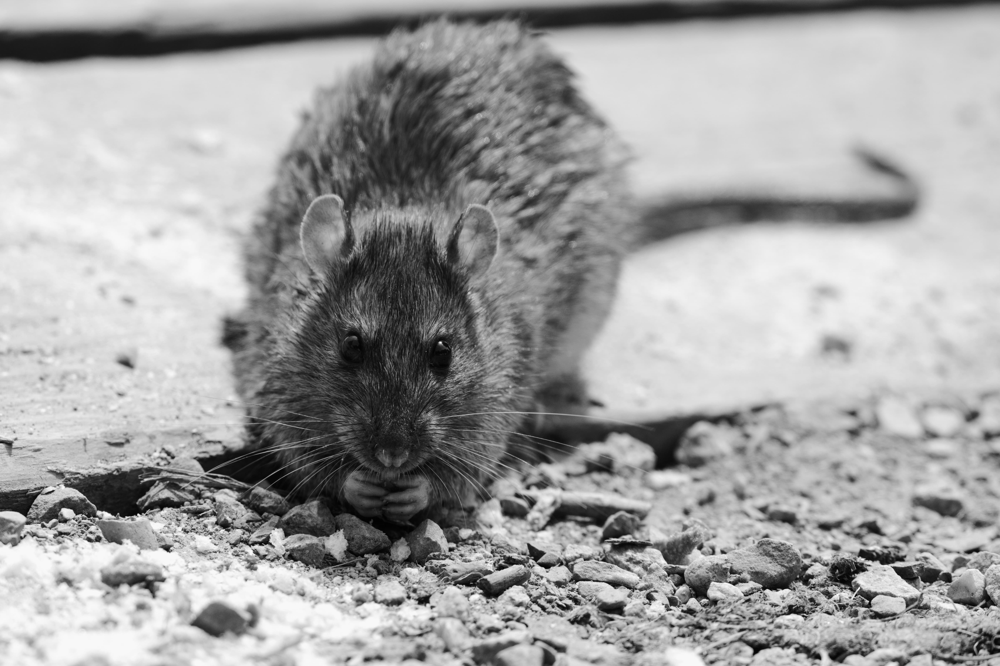
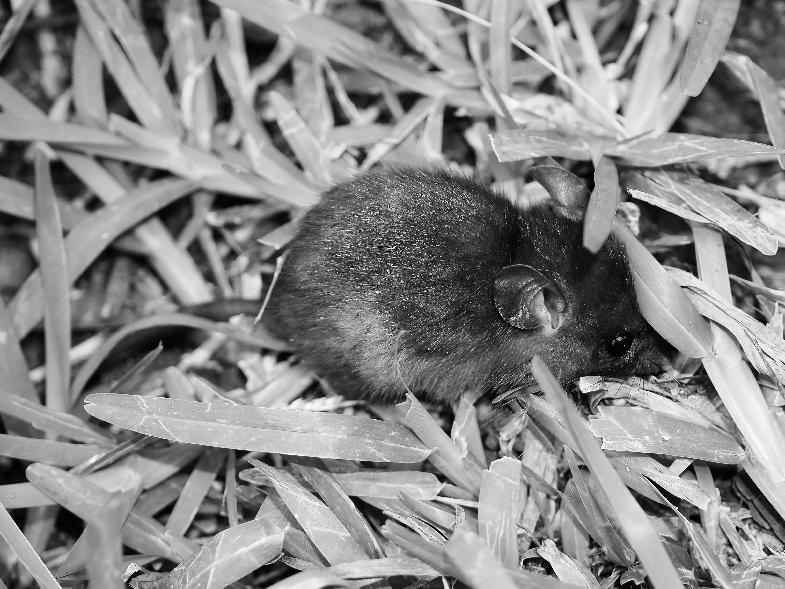
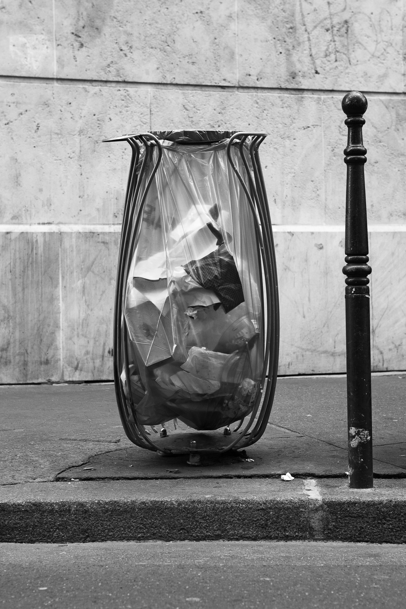

La présence des rats est devenue l’enjeu de débats politiques majeurs à Paris. La maire, Anne Hidalgo, est bien placée pour le savoir : souvent attaquée sur sa supposée inaction face à leur prolifération dans la ville, elle a dû à plusieurs reprises défendre son bilan en matière de propreté.
La controverse sur les rats s’est avant tout focalisée sur leur visibilité. Leur nombre est difficile à estimer, les chiffres avancés oscillent entre 3 et 6 millions de rongeurs dans la ville. L’unité de prévention des nuisances animales, rattachée à la préfecture de police de Paris, a observé en 2016 la présence des rongeurs dans 14 % des immeubles visités, contre 21 % l’année suivante et 24 % en 2018. Si l’on voit plus de rats dans la capitale, est-ce pour autant la preuve qu’ils prolifèrent ? Comment évaluer leur population dans les souterrains de la ville ? La simple évocation des rats suscite des émotions fortes, comme la peur et le dégoût, qui sont relayés par les médias et les réseaux sociaux et semblent orienter la perception publique du sujet. S’y ajoute la crainte des risques sanitaires auxquels ils sont volontiers associés.
La polémique se nourrit donc de l’image négative du rongeur, objet de préjugés tenaces. Associé à la maladie et à la pauvreté, il serait le symbole d’une ville sale pour les citoyen·ne·s et les élu·e·s qui demandent son éradication. L’affaire n’est pas si simple : les rats rendent également des services aux humains et participent à la biodiversité urbaine. En ingérant une grande quantité de déchets, ils contribuent à éviter que Paris soit envahie par les ordures.
Les rongeurs sortent des égouts
Qui est le rat ?
Le rat présent à Paris est le rat brun (Rattus norvegicus), encore appelé rat surmulot, surmulot ou rat d’égout. Il appartient à la famille des rats et des souris (Muridae) qui regroupe plus de soixante-six espèces à travers le monde. Son mode de vie est étroitement lié à celui des humains puisqu’il évolue dans les parties basses et humides des habitations comme les caves, les entrepôts et les égouts. Cet environnement urbain, où il ne craint pas de prédateur et où la nourriture abonde, est idéal pour lui.

Rattus norvegicus. Photo : Georges Abadie.
Le rat brun n’appartient pas au même groupe que le rat noir (Rattus rattus), celui qui a contribué à la propagation de la peste. Benoît Pisanu, chercheur au laboratoire Patrimoine naturel, rattaché à l’Agence française pour la biodiversité (AFB), au Centre national de la recherche scientifique (CNRS) et au Muséum national d’histoire naturelle (MNHN), rappelle que la présence du rat noir n’a pas été constatée à Paris. Cela n’empêche pas que l’animal soit perçu comme un perturbateur de l’hygiène des villes. Il « est alors pensé comme disqualifiant et dégradant l’image de la villeDaphnée Leportois, « Vous n’avez rien à craindre des rats qui grouillent dans votre ville », Slate, 18 juin 2019. », résume Jean Estebanez, chercheur en géographie à l’Institut national de la recherche agronomique (INRA).

Rattus rattus. Photo : Dominique Martiré.
Un comptage difficile
Malgré la difficulté d’établir une estimation précise, l’idée d’une prolifération de rats dans la capitale a fini par s’imposer, notamment par la voix des médias à grande diffusion. Pour Le Figaro, qui reprend les chiffres des entreprises de dératisation, les sous-sols parisiens hébergeraient 4 à 5 millions de rats. Cette estimation se fonde sur l’hypothèse d’environ 1,5 à 2 rats par habitant·e pour une population intra-muros de 2,1 à 2,2 millions de personnes. Pierre FalgayracIl est l’auteur du Grand guide de lutte raisonnée contre les nuisibles ou bioagresseurs urbains, Paris, Lexitis, 2014., présenté par Le Parisien comme « ingénieur expert en gestion des rats », avance un coefficient de 1,5 à 1,7 individu par habitant·e dans les villes bénéficiant d’un système d’égouts ancien et non bétonné et d’une bonne gestion des déchets. Il y aurait alors « 3,5 voire 4 millions » de rats à Paris.
D’autres études fondées sur leur capture ont été réalisées au parc des Chanteraines dans les Hauts-de-Seine, entre 2011 et 2017, et au Jardin des Plantes, dans le Ve arrondissement de Paris, en 2018 et 2019 : la première a constaté un taux de capture compris entre 0,06 et 1,58 rat pour 100 pièges posés ; la seconde a enregistré, grâce à la pose des caméras-pièges infrarouges et des méthodes de modélisation, environ 600 rats sur les 5 hectares du site, soit 60 à 160 individus par hectare.
Dans le XVIIe arrondissement de Paris, la « brigade citoyenne de dératisation » s’appuie pour mener son action sur une plateforme de signalement en temps réel de la présence de rats dans l’espace publicLe site ne fonctionne que pour le XVIIe arrondissement. Il annonce sur sa page d’accueil : « Vous le savez, les rats se multiplient dans Paris »., lancée en juin 2018. Si elle n’a pas pour objectif d’évaluer précisément le nombre de rats à Paris, mais favoriser l’implication des citoyen·ne·s et l’action collective, elle a enregistré 3 518 signalements de rats en 2018 et 1 587 en 2019 dans l’arrondissement.
Ces incertitudes sont encore accrues par la difficulté à recenser cet animal méfiant qui se laisse peu capturer. Comment dès lors parler de prolifération ? Selon Pierre Falgayrac, « si les rats pouvaient proliférer librement, au rythme où ils se reproduisent, il y a longtemps qu’il n’y aurait plus d’hommes ni de femmes sur Terre« Les rats sont-ils nuisibles en ville ? », Le blob média, avril 2019. ». Benoît Pisanu indiqueLors d’une intervention durant une manifestation consacrée à la « saleté en ville », au Muséum national d’histoire naturelle, en décembre 2018. que, sous l’effet du réchauffement climatique, Paris fait face à des sécheresses de plus en plus sévères qui privent le rat de ressources et amenuisent sa population. Tout en relativisant l’idée d’une prolifération, la communauté scientifique n’exclut pas celle d’une plus grande visibilité. Benoît Pisanu suggère :
Si les rats sont particulièrement visibles à Paris, c’est parce qu’ils sont poussés à sortir de leur habitat souterrain en raison de nombreux changements de l’écosystème – crues de la Seine, éclairages nocturnes brouillant la frontière jour/nuit, fuites de gaz en sous-sol – et de l’attrait des nombreux déchets alimentaires produits par les usagers de la ville.
« Les gens ont l’impression qu’il y en a plus, car ils sont de plus en plus visiblesClément Bolano, « Faut-il s’inquiéter de la prolifération des rats ? », Ouest-France, 24 octobre 2017. », explique de son côté Gwenaël Vourc’h, directrice de recherche à l’INRA qui a piloté l’étude au parc des Chanteraines. Deux facteurs seraient responsables de la montée en surface de ce peuple souterrain : l’alimentation disponible, dont il est dépendant, et les travaux liés à l’extension du métro, comme le prolongement de la ligne 14 vers Saint-Denis Pleyel, car ils détruisent les cavités qui constituent son habitat et y produisent des vibrations.
Les risques sanitaires
Les discours sur la dangerosité réelle ou supposée de l’animal se cristallisent sur les risques sanitaires mais cette évaluation donne lieu à des positionnements radicalement divergents. Le 27 janvier 2020, leparisien.fr titrait : « 30 % des rats de Paris sont porteurs de bactéries pathogènes ». Ce chiffre se réfère à l’étude de Romain Lasseur, toxicologue et responsable des sociétés IZInovation et IZIpestLa mission de ces deux sociétés est de « supporter [leurs] clients dans leurs missions et œuvrer pour la protection sanitaire des environnements contre les espèces invasives, les ravageurs et les agents pathogènes »., pour qui « le rat brun en ville est porteur de toutes les maladies qui posent des soucis. Il est porteur de la leptospirose, une maladie transmissible à l’homme [et] vecteur de la salmonelle ». Cette étude est contestée par Amandine Sanvisens, présidente de l’association Paris Animaux ZoopolisLe nom de Paris Animaux Zoopolis, association fondée en 2017, fait référence à l’ouvrage de Sue Donaldson et Will Kymlicka, Zoopolis. Une théorie politique des droits des animaux, Paris, Alma éditeur, 2016., qui voit un conflit d’intérêts entre l’activité de recherche de Romain Lasseur et son activité commerciale, ses client·e·s étant principalement des entreprises de dératisation. Elle pointe son lien avec le programme électoral de Geoffroy Boulard, maire Les Républicains du XVIIe arrondissement, qui se mobilise pour l’éradication des rats. Comme le rapporte Le Parisien, Romain Lasseur a « été missionné par Geoffroy Boulard, afin de mener une étude sur le phénomène de prolifération des rongeurs à Paris ».
Bien que des recherches aient récemment montré que les agents de propagation de la peste avaient été des parasites humains, sans lien avec les rats, la réputation de ces animaux comme vecteurs de maladie n’est pas totalement usurpée. Chaque année en France sont enregistrés 600 cas de leptospirose, transmise par l’urine des rats et parfois mortelle. Ce risque sanitaire est brandi par les citoyen·ne·s mobilisé·e·s contre les rats et les élu·e·s dénonçant les actions insuffisantes de la ville. « Il est donc primordial de veiller au maintien d’une sorte de vide sanitaire entre les populations de rongeurs et les habitants pour éviter des contaminationsPétition « Agissons contre la prolifération des rats à Paris » sur Change.org. », écrit le collectif Rats le bol, fondé par des habitant·e·s du XVIIe arrondissement, dans la pétition qu’il a lancée en ligne. Selon lui, les Parisien·ne·s n’ont plus les anticorps pour combattre la leptospirose, la gale sarcoptique ou d’autres vers parasitaires potentiellement dangereux dont le rat serait le vecteur.
Face à ces propos alarmants, les pouvoirs publics se veulent rassurants. Les enjeux sanitaires posés par la présence de rats à Paris relèvent de la compétence de l’Agence régionale de santé, qui suit l’épidémiologie des cas de leptospirose et s’est engagée dans la lutte contre le logement insalubre : elle n’alerte sur aucun risque spécifique à Paris, car aucun cas de morsure n’a été relevé à ce jour. Depuis plusieurs années, la Ville de Paris incite cependant les égoutier·e·s à se faire vacciner contre la leptospirose, recommandation suivie par 70 à 75 % d’entre eux. Mais cette maladie, qui progresse en zone tropicale, est méconnue et les recherches sont encore peu avancées. L’étude réalisée au parc des Chanteraines, citée précédemment, a détecté 16 types de parasites sur les rats, dont 7 bactéries pathogènes à potentiel zoonique (c’est-à-dire transmissible aux humains) et a testé 21 % d’entre eux porteurs de bactéries Leptospirosa. Cependant, il n’existe pas de consensus scientifique sur les modalités de transmission de maladies des rats aux humains. L’ampleur de ces risques reste donc à préciser.
Les stratégies de lutte contre les rats
L’absence de consensus scientifique n’empêche pas la mise en place de diverses stratégies de lutte contre les rongeurs – et elles ne sont pas nouvelles.
La présence des rats à Paris remonte à plusieurs siècles et l’existence des premières entreprises de dératisation est attestée depuis 1750, date à partir de laquelle elles ont été menées par des particuliers et la ville avec plus ou moins de succès. Depuis 2016, la Ville de Paris a mis en place un plan dédié, doté d’un budget de 1,5 million d’euros. En 2019, la campagne de dératisation menée conjointement par la Ville et la Préfecture a duré deux fois plus longtemps que les années précédentes. Selon Bruno Lassalle, adjoint à la direction départementale de la protection des populations (DDPP) de la préfecture de police, cet investissement répond à une augmentation du nombre des signalements.
Si les rats ne sont pas des nuisibles au regard de la loi, ils sont considérés par les pouvoirs publics comme susceptibles de causer une gêne dans la capitale car ils provoquent des infestations, des dégradations et des salissures, au même titre que les pigeons. Un arrêté de dératisation est mis en place chaque année au printemps – la période de pic de reproduction des rongeurs. Il « consiste en une obligation faite aux propriétaires, aux locataires, aux syndics d’immeubles, aux commerçants mais aussi à la Ville de réaliser les travaux pour éviter la prolifération des nuisibles dans les bâtiments qu’ils occupent. C’est une obligation imposée par le règlement sanitaireBenoît Hasse, « Paris : la chasse aux rats est ouverte », Le Parisien, 3 mars 2019. », rappelle Bruno Lassalle. « Mais il ne s’agit pas de demander aux Parisiens de se mettre à exterminer les rats, rassure-t-il aussitôt. L’objectif est plutôt de leur demander de tout mettre en œuvre pour bien séparer deux mondes : celui des rats, le plus possible souterrain. Et celui des hommes, en surface. »
Les solutions chimiques
Les solutions chimiques sont une première technique de lutte contre les rats. Elles posent des questions environnementales et, plus généralement, interrogent la pertinence de mener des actions locales et temporaires alors que la situation est chronique et touche de nombreuses villes dans le monde. En Europe, le règlement REACH encadre étroitement les produits chimiques utilisables par les particuliers, les entreprises de dératisation et les pouvoirs publics, qui sont dénoncés pour leurs conséquences environnementales. L’agent chimique portant le nom de mort-aux-rats est maintenant interdit pour des usages permanents en raison de sa toxicité. L’usage de biocides à base de brodifacoum et de diféthialone est limité afin d’éviter le risque d’empoisonnement d’espèces non cibles et la résistance génétique aux anticoagulants que leur utilisation provoque. En France, l’Agence nationale de sécurité sanitaire de l’alimentation, de l’environnement et du travail (ANSES), qui s’occupe d’évaluer les risques liés aux biocides par le biais de son comité de suivi des autorisations de mise sur le marché (AMM), a interdit l’appâtage permanent, c’est-à-dire la mise en place de produits sur une durée d’une semaine à six mois.
Ces mesures sont lourdes à respecter selon la chambre syndicale 3D (dératisation, désinsectisation, désinfection), qui réunit les acteur·rice·s du secteur : elles conduisent à interdire de nombreuses techniques, à limiter les moyens d’intervention des entreprises de dératisation et à modifier leurs pratiques. L’usage de produits chimiques leur semble néanmoins nécessaire. Romain Lasseur est confiant :
Techniquement, on sait faire. On a des produits chimiques qui marchent bien. Face aux espèces invasives, il ne faut pas avoir de dogmatisme de la bioéthique. Utilisés par des professionnels, ces produits ne sont pas dangereux. Des innovations techniques viennent s’ajouter à la panoplie des dératiseurs.
Ces solutions sont perçues comme largement inefficaces à l’échelle de la ville car elles ne résolvent pas la présence des rats dans les endroits peu accessibles comme les égouts.
L’action sur les comportements
Dans le cadre du plan parisien de santé environnementale (PPSE), qui cherche notamment à modifier les pratiques des citoyen·ne·s, lutter contre l’incivisme et faire évoluer les infrastructures, la mairie de Paris met en place un plan d’action à grande échelle contre les rats afin de diminuer considérablement leur nombre en surface. Les citadin·e·s doivent être formé·e·s à la spécificité des écosystèmes urbains afin de participer « au bon usage de la nature en ville » et de contribuer à la prévention des problèmes sanitaires : de nouveaux règlements incitent à changer de comportement, des solutions techniques sont mises en place tandis que le budget dédié au nettoyage des espaces publics est augmenté.
Le plan d’action contre les rats agit sur l’environnement des rongeurs : il réduit les ressources disponibles, en particulier la nourriture, gêne les déplacements et le nichage. Il se décline en plusieurs actions qui consistent à multiplier les opérations de dératisation, confiner les rats dans les égouts par des grilles dédiées, limiter l’accès aux déchets alimentaires dans l’espace public en ramassant plus fréquemment les poubelles, renforcer les sanctions envers les personnes qui les nourrissent. Cela passe par un changement des stratégies de collecte des déchets, dont une partie est gérée directement par la Ville et l’autre contractualisée à un prestataire privé. Ainsi, en 2019, la Ville de Paris a changé 10 % de ses 30 000 poubelles de rue car les modèles transparents mis en place dans le cadre du plan Vigipirate rendaient les déchets bien trop facilement accessibles aux rats. Les nouvelles technologies de l’information et de la communication ont aussi été mobilisées pour permettre un meilleur signalement des déchets, comme l’application DansMaRue, mise en place en 2018 pour signaler un problème dans l’espace public.

Poubelle Bagatelle répondant aux normes du plan Vigipirate à Paris. Photo : Joséphine Bruder, Mairie de Paris.
Poubelle anti-rats à Paris. Photo : Jean-Baptiste Gurliat, Mairie de Paris.
Le plan redessine la carte des compétences des services concernés par la lutte contre les rats. Il crée un service dédié, le Service parisien de santé environnementale (SPSE), au sein duquel le Département faune et action de salubrité (DFAS) répond aux demandes de conseil, d’expertise et d’intervention concernant les risques sanitaires associés aux rats. Il assure la coordination des services liés à leur éradication, en lien avec la préfecture de Paris et les mairies d’arrondissement. Des représentant·e·s des égoutier·e·s, alors qu’ils et elles participaient historiquement à la dératisation, avec une prime dite « queue de rats » pour les rongeurs attrapés, critiquent le manque de coordination entre le SPSE et leur activité. Julien Devaux, délégué CGT, voit dans ce plan une tentative de la mairie de Paris de « masquer ses propres responsabilités en la matière » et pointe un manque de personnel.
« La lutte raisonnée »
Pierre Falgayrac, qui officie également comme consultant pour la Ville de Marseille, le royaume du Maroc et la principauté de Monaco, promeut l’approche qu’il désigne comme la « lutte raisonnée ». Cette méthode, qui repose sur la privation alimentaire et sur l’observation des cheminements et des lieux de nidification, minimise les doses de rodenticides. Elle comporte également un travail de pédagogie sur les comportements humains. Selon l’auteur, « une majorité de dératiseurs professionnels sont des poseurs de boîtes en grand nombre pour rassurer les clients comme eux-mêmesbloghyform.wordpress.com », alors que les rats ont des stratégies d’évitement des pièges.
Certaines entreprises de dératisation à Paris, comme Aurouze, ont adopté cette démarche raisonnée. Elles tiennent en effet à se montrer respectueuses de l’environnement et la chambre syndicale 3D souligne l’importance de leur mission de prévention pour équilibrer les écosystèmes. Jean-Michel Michaux, représentant de la chambre, rappelle le contrôle toujours temporaire de la population des rats :
Le surmulot a besoin de nourriture, d’eau et de terriers. Il faut agir sur ces trois leviers pour prévenir sa prolifération. La disparition totale d’une de ces trois ressources entraîne la disparition des rats, la diminution d’une ressource entraîne une diminution de la population. […] La prévention repose sur la suppression d’au moins une des trois ressources. Elle est souvent difficile de manière permanente mais peut être obtenue transitoirement, avec un effondrement temporaire de la population des ratsIntervention lors du séminaire « Stratégies de gestion des rats en milieu urbain », organisé par la mairie de Paris le 17 juin 2016..
La neige carbonique
La « brigade citoyenne de dératisation » du XVIIe arrondissement injecte quant à elle de la neige carbonique dans les terriers des rats, ce qui les asphyxie. Cette méthode, introduite aux États-Unis, n’est pas encore homologuée comme rodenticide en France. La Ville de Paris, inquiète des odeurs que provoque la décomposition des cadavres de rats, met notamment au point des dispositifs pour les noyer dans une solution alcoolique. Pour Paris Animaux Zoopolis, la méthode à base de neige carbonique est inadmissible, au même titre que toute autre technique portant atteinte à l’intégrité physique des animaux et leur infligeant une souffrance inutile.
Les alternatives à la dératisation
Différentes villes à travers le monde ont essayé d’introduire des prédateurs du rat, comme Chicago avec le coyote et New York avec les teckels et les terriers. Une méthode alternative est la contraception, que développe l’entreprise SenesTech aux États-Unis et dont « les composants chimiques détruisent les ovules [des rates] dans leur plus petite forme pour que l’animal ne puisse plus ovuler », explique l’endocrinologue et chercheuse Pat Hoyer au journal Wired. Cette méthode comporte deux limites fondamentales, comme l’indique la présidente de Paris Animaux Zoopolis : d’une part, « il faut des apports réguliers du contraceptif aux mêmes femelles, ce qui est difficilement réalisable et coûteuxVoir l’entretien réalisé en mars 2020 par François Dayre, Nisrine Tabka, Guillaume Rousseau, Hitomi Nonaka, Joèla Visniec dans le cadre de l’enquête de controverse Les Rats à Paris. », d’autre part et surtout, comme tout contraceptif chimique, son rejet par les urines dans les cours d’eau a un impact négatif important sur la fertilité des poissons. Cet enjeu écosystémique a empêché jusqu’ici la légalisation de la contraception dans l’Union européenne.
La politique des rats
La forte mobilisation et la pluralité des méthodes employées pour lutter contre les rats ne semblent pas avoir eu raison de l’idée que l’on assiste à une invasion. Selon de nombreux témoignages de citoyen·ne·s et de professionnel·le·s comme les éboueur·se·s, les rats seraient en train de gagner la bataille contre une politique de plus en plus impuissante.
Les normes européennes en matière d’usage de produits chimiques ont été durcies [ce qui est] une bonne nouvelle pour la protection de l’environnement, mais les moyens pour éradiquer les rats s’en sont trouvés considérablement réduits. Leur population s’est donc accrue.
Elle évoque également les « crues de la Seine de plus en plus fréquentes » qui « provoquent régulièrement l’inondation d’une partie des égouts et donc la remontée des rats » et le fait que « les Parisiens et les visiteurs ont aussi fait évoluer leurs usages de l’espace public » en multipliant les pique-niques, ce qui entraîne « l’augmentation des déchets alimentaires au sol, dont les rats viennent se nourrir ».
Les voix qui dénoncent le laxisme de la maire Anne Hidalgo, jugée responsable de la prolifération des rats depuis plusieurs annéesRomain Lescurieux, « Paris : “En quarante ans de métier, c’est la première fois que je vois autant de rats” », 20minutes, 9 décembre 2016., sont largement relayées par les médias et par l’opposition municipale. Dans ce contexte, la presse titre régulièrement sur le sujet. « Paris : la chasse aux rats est ouverte », écrit Le Parisien le 3 mars 2019. « Une brigade citoyenne pour lutter contre les rats à Paris » fait l’objet d’un reportage diffusé sur France Inter le 11 avril 2019. Le 4 juillet 2018, Le Parisien relate le « tour du monde » de la photo du maire du XVIIe arrondissement, Geoffroy Boulard, initialement parue dans ses pages, regrettant que l’image de Paris comme « ville sale » se propage ainsi à l’étranger.
Geoffroy Boulard, maire du XVIIe arrondissement de Paris (2018). Photo : Alain Guizard.
À l’inverse, pas plus les autorités publiques compétentes sur les enjeux d’hygiène et de nuisances animales (l’Agence régionale de santé ou la préfecture) que les chercheur·se·s spécialistes de la question ne parlent d’invasion ni ne s’alarment de conséquences problématiques pour la population. La mairie de Paris rappelle que toutes les mesures sont prises pour contrôler la présence des rats en ville, tandis que les expert·e·s avancent l’explication d’une plus grande visibilité des rats.
La question a fait l’objet d’une lutte politique et de vives polémiques au Conseil de Paris. Le groupe Les Républicains, principale force d’opposition municipale, estime que le phénomène « est directement lié à la passivité de la Ville de ParisFabien Magnenou, « Les rats sont-ils en train de grignoter peu à peu Paris ? », France Télévisions, 8 février 2018. ». David Belliard, coprésident du groupe Europe Écologie Les Verts, évoque pour sa part un problème réel, qui fait l’objet d’une « hystérisation » et d’une récupération politique de la part de l’opposition, et refuse de verser dans le catastrophisme. De fait, la division partisane entre la droite et la gauche se reflète dans les prises de position des élu·e·s et leur appréciation des mesures engagées par la Ville, mécanisme renforcé par l’insuffisance des connaissances scientifiques concernant l’écologie des ratsVoir l’étude « Rats About Town : A Systematic Review of Rat Movement in Urban Ecosystems » publiée en 2019 dans le journal scientifique Frontiers in Ecology and Evolution.. Parmi Les Républicains, Geoffroy Boulard a fait de la lutte contre les rongeurs sa marque de fabrique. Dénonçant vivement l’inaction de la mairie de Paris, il a décidé d’agir après avoir reçu le collectif citoyen Rats le bol Paris. Ce collectif dénonce une invasion des rats, estime que la cohabitation avec ces rongeurs en surnombre soulève des problèmes d’ordre écologique et matériel et recourt à des arguments puissants comme la peur et le dégoût : « Mes enfants sont terrorisés » ; « Ce qui me choquait c’était de voir des parents déposer leur bébé dans l’herbe, sans protection, alors qu’il y avait des masses de rats pas si loin ». Pour Jacques d’Allemagne, ancien président des piégeurs agréés d’Île-de-France, « quand ils sont sous terre, cela ne pose pas de problème. Mais il ne faut pas qu’ils sortent ». Le collectif a contribué à porter le sujet dans les médias et auprès des représentant·e·s politiques.
De l’avis d’Anne Souyris, adjointe à la mairie de Paris et chargée des questions de santé, la peur des rats est davantage liée à un problème esthétique qu’à un véritable sujet de santé publique.
L’important, c’est de savoir pourquoi les rats sortent et comment les faire re-rentrer sous terre, et de les disjoindre de la vie des hommes, qui n’ont pas envie de les voir, pour plein de raisons. Ce n’est pas agréable de voir des rats […] c’est l’objet de nombreuses phobies terribles, comme les araignées. Il faut éviter de jouer sur ces peursThierry Noisette, « Les rats pullulent à Paris : 7 questions sur une invasion hors de contrôle », L’Obs, 12 mars 2018..
Les rats dans l’écosystème urbain
Les ressources à la fois financières, techniques et humaines engagées par les responsables politiques pour éradiquer les rats à Paris ne sont pas sans conséquences sur l’environnement et la biodiversité urbaine, car elles nécessitent l’emploi de biocides qui entraînent des risques pour d’autres espèces non ciblées, dont les humains. Les chercheur·se·s et les associations rappellent que la présence des rats dans les grandes villes est un fait ancien et qu’ils font partie de la biodiversité spécifique des milieux urbains : ils sont qualifiés de liminaires dans la mesure où, sans être domestiqués, ils vivent avec les humains. La modification des niches écologiques a aussi conduit à l’appauvrissement de la biodiversité urbaine au profit de certaines espèces.
Avant d’être un risque ou un problème, les rats appartiennent à la biodiversité des villes. La notion même de nuisible est loin de faire l’unanimité, ce terme désignant exclusivement et officiellement une liste d’espèces à l’origine de dégâts sur les cultures, comme le sanglier, la belette ou la corneille, que les chasseur·se·s ont le droit de réguler. Réagissant à l’appel d’éradication, les défenseur·se·s des rats rappellent que non seulement ils ont le droit d’exister pour eux-mêmes, mais qu’ils sont des plus utiles aux humains. Ils occupent une partie de la ville que ces derniers ne fréquentent pas, dans la mesure où 75 à 80 % des rats résident dans les égouts. Le problème concernerait alors moins leur existence que leur présence en dehors des souterrains.
L’utilité des rats est un argument justifiant leur présence dans les villes : ils se nourrissent de déchets et contribuent à les éliminer, rendant un service présenté parfois comme écosystémique. Un rat mange 25 grammes de déchets par jour. Chacun d’eux nous débarrasserait de 9 kilos de déchets au cours de sa vie, d’une durée moyenne d’un an, même si cette quantité fait l’objet d’une controverse entre défenseur·se·s et contempteur·se·s des rats.
Les égoutier·e·s entretiennent une relation ambivalente avec l’animal, qui les aide autant qu’il leur nuit. « Nous avons appris à vivre avec eux : c’est comme l’odeur, on s’habitueMarie Peronnau, « Les égoutiers de Paris : cuissardes en eaux troubles », Capital, 14 mars 2014. », commente Lionel Decaix, responsable des visites publiques et ancien égoutier. « En général, ils se sauvent à notre approche. Si ce n’est pas le cas, il faut se méfier. » D’un côté, le rat facilite le travail des égoutier·e·s car il réalise une « prestation d’épuration » en rongeant le limon des caniveaux, ce qui permet le lessivage des avaloirs d’égout, comme l’explique le chercheur Pascal Jean Lopez. D’un autre côté, les inquiétudes de cette profession à leur égard se sont amplifiées pendant la période de confinement de 2020 liée à la pandémie de Covid-19. Le médecin biologiste Claude Danglot évoque dans Marianne « une possible contamination des rats au Covid-19 via leurs déjections ». Sur la base de cette hypothèse, les égoutier·e·s de Paris ont lancé une grève perlée début mai 2020, réclamant de meilleurs équipements de protection ainsi que des études approfondies sur leur exposition au virus.
La même ambivalence se retrouve chez les éboueur·se·s de Paris. Les rats peuvent jouer le rôle d’indicateurs lorsqu’ils fuient une montée des eaux ou un dégagement de gaz. Ils participent aussi à leur mission de lutte contre l’engorgement des galeries en dévorant 800 tonnes de déchets organiques par jour à Paris. À ce titre, les éboueur·se·s les considèrent comme des alliés. Mais leur présence massive est aussi présentée comme un risque professionnel : le 9 décembre 2017, des éboueurs ont filmé un bac à ordures grouillant de rats amoncelés en un monticule spectaculaire. Les rongeurs auraient « de moins en moins peur » et n’hésiteraient pas à leur « sauter à la gorge ». Cette vidéo, partagée sur la page officielle du Parisien, a été retweetée 750 fois dès le lendemain – un chiffre élevé pour ce journal.
Les défenseur·se·s des animaux adoptent une autre perspective, éthique, et préfèrent la cohabitation à l’éradication : non seulement les rats sont utiles mais ils participent à la diversité biologique des villes. L’association anti-spéciste Paris Animaux Zoopolis revendique ainsi un droit d’existence propre pour les rats et pose la question du bien-être animal. Elle s’est engagée contre la campagne de dératisation menée par la Ville et la préfecture de Paris dont elle met en doute les arguments pour la justifier, avançant que la présence de rats a des effets bien moindres qu’on ne le dit : « C’est aux êtres humains de protéger leurs installations et de prendre les mesures de sécurité qui s’imposent. Dératiser n’est pas la solution. » Elle conteste l’augmentation de leur nombre en soulignant la faiblesse des connaissances scientifiques sur leurs mouvements. Plus largement, l’association réfute l’idée que les rats soient nuisibles, au vu des classifications en vigueur, dénonce le qualificatif d’invasif qui leur est parfois appliqué et préfère parler d’espèce liminaire, afin de souligner leur cohabitation avec les humains : « Nous devons partager l’espace urbain avec ces animaux, car ils n’ont nulle part où aller. »
Afin de modifier l’image négative associée aux rats, Paris Animaux Zoopolis a mené une campagne d’affichage pour apprendre à les « voir » autrement, prolongeant la stratégie d’autres campagnes humanitaires qui cherchent à sensibiliser l’opinion publique sur le thème de la discriminationCitons l’exemple d’une campagne menée en 2019 par le Secours populaire, qui présentait littéralement la pauvreté comme une étiquette, une image, un préjugé, faisant des pauvres l’objet d’une stigmatisation et non pas simplement les perdants d’une réalité économique..
Campagne Paris Animaux Zoopolis (2018), PAZ.
Une possible cohabitation
L’absence de données exactes sur la population des rats et les préjugés les concernant posent deux questions principales : les rats à Paris sont-ils vraiment un problème et pour qui ? Faut-il et peut-on réguler leur population ? Leur présence nourrit une controverse qui concerne plusieurs points de désaccords : leur nombre et leur prolifération réelle ou estimée, leur statut dans la ville, leur impact en termes sanitaires et écologiques et les mesures à prendre à leur encontre ou en leur faveur. La controverse révèle aussi la part importante de l’imaginaire attaché à cet animal dans l’analyse de la situation et des préconisations qui en découlent. Comme la proverbiale saleté que l’on balaie sous le tapis, la vie souterraine nous tend une image inversée de nos espaces aseptisés, un monde obscur où l’on se nourrit de déchets, où l’on nage dans les égouts, où des bêtes insatiables dévorent tout ce qu’il y a à consommer.
De manière plus large, le débat invite à nous interroger sur notre manière d’envisager la biodiversité urbaine, non pas en termes de politique de conservation d’une nature déjà présente ou d’une espèce estimée acceptable par les humains, mais plutôt comme une manière de prêter une attention nouvelle à une espèce souffrant d’une mauvaise image et de cohabiter avec elle.
L’étude de cette controverse permet également de s’écarter de la vision manichéenne que tentent d’imposer certain·e·s acteur·rice·s, selon laquelle animaux et humains vivraient dans deux mondes bien distincts, l’un souterrain, l’autre en surface. La réalité, bien plus complexe, pose la question des interrelations entre les espèces, humains compris, dans l’écosystème urbain, celle des « intrications », comme les nomme Michel Callon, que les expertises semblent trop facilement ignorer :
En refusant de reconnaître ces intrications, en pensant qu’on se bat contre des moustiques comme contre des tanks, décideurs et experts rendent celles-ci encore plus fortes et difficiles à gérer. Celui qui veut rendre compte de cette histoire doit tenir compte à la fois des modalités d’intervention des experts et des décideurs, et de l’intrication des forces sur lesquelles ils s’efforcent d’agir ; or, celles-ci leur échappent car ils les croient indépendantes. Les sciences sociales se fourvoieraient si elles étaient aveugles à ces configurations socio-techniques, si elles séparaient, comme le font les experts et les décideurs, monde social et monde naturelMichel Callon, « L’Égypte et les experts. Compte-rendu du livre Rule of Experts de Timothy Mitchell », Gérer et Comprendre, 86, 2006, p. 12-26. PDF disponible en ligne.
Clémence Seurat
à partir d’une enquête de Fatima Gauna et Émilien Schultz
Clémence Seurat est programmatrice artistique et éditrice.
La philosophe belge Vinciane Despret travaille depuis de longues années sur le sujet des animaux. Elle s’intéresse à leur inventivité et aux détournements dont ils font sans cesse preuve, interrogeant par là même les relations que nous entretenons avec eux. Dans Penser comme un rat, elle questionne les dispositifs déployés par les chercheur·se·s et la manière dont ils conditionnent les réactions des rats de laboratoire. Prenant appui sur le travail de Jakob von Uexküll et de son concept d’Umwelt, le monde vécu par l’animal, elle se demande « ce que peut signifier un labyrinthe » pour un rat : lorsqu’il est soumis aux expériences des chercheur·se·s, n’a-t-il pas un point de vue sur la situation ? De telles nouvelles interprétations des relations entre humains et animaux au sein des laboratoires, en les considérant comme des situations de co-apprentissage dans lesquelles des êtres se font penser et pensent ensemble, viennent enrichir la vision du travail scientifique.
La journaliste Zineb Dryef se lance dans une enquête de terrain, motivée par sa propre phobie des rongeurs ; elle rencontre plusieurs professionnel·le·s du secteur, tente de séparer les faits de ses propres fantasmes ; elle finit par démystifier certains clichés liés aux rats, notamment celui qui les associerait à la pauvreté et à l’insalubrité : en réalité, les rats sont partout, même dans les restaurants haut de gamme du XVIe arrondissement !